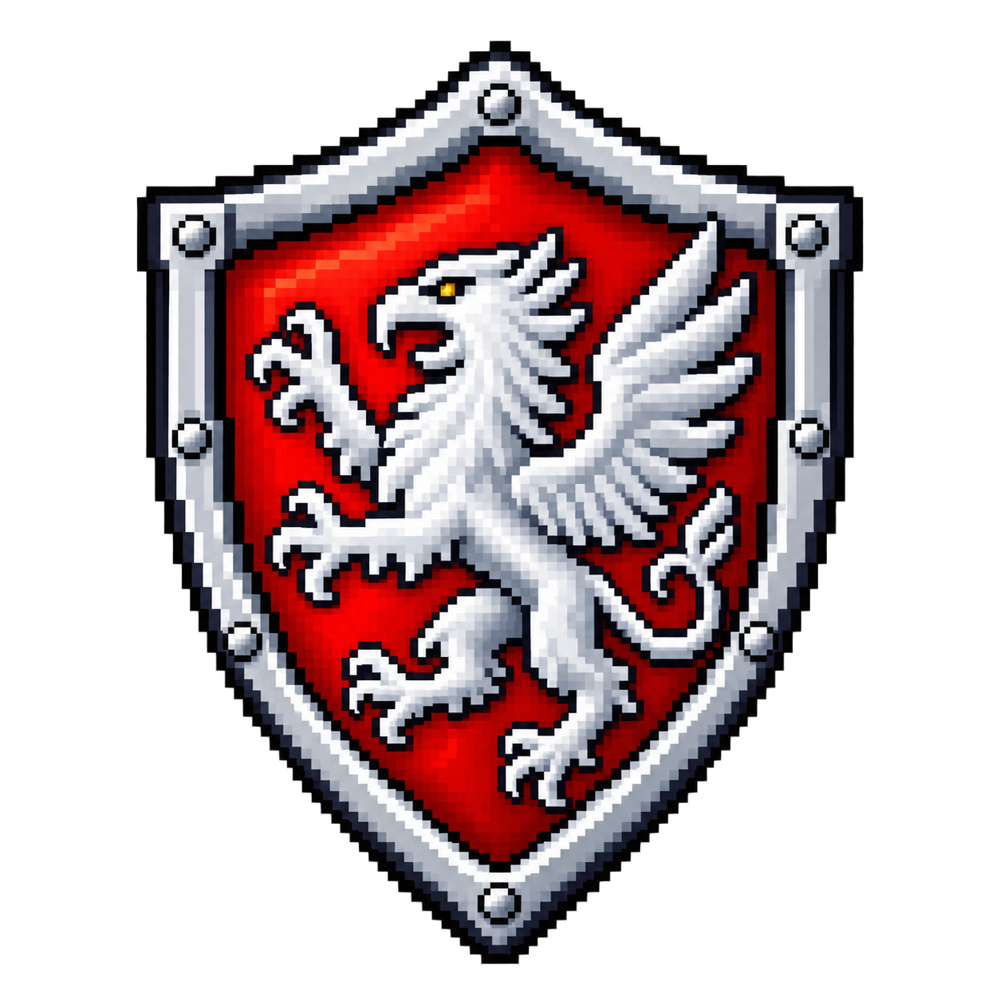

Order of the Argent Gryphon
Formally known as the Order of the Argent Gryphon, they are a chivalric order devoted to honour and justice. From their mountain hideout, they watch and defend the lands against corruption and evil, guided by faith, strength, wisdom, and the old oaths of their predecessors.
Argent Codex
The Argent Gryphon adheres to a codex — a set of regulations for daily life, behaviour, and values — emphasising chivalry, piety, and a strict moral code. Written by Roderic Rivershaw, it outlines the ideal conduct for a Gryphon, encompassing both monastic life and military service.

Diplomacy
The Argent Gryphon has formalised diplomatic ties with two other guilds at this time.
Treaty of Alliance
Between the Argent Gryphon and the Circle of Stonehaze
We agree with the articles written below. May this alliance be blessed by Banor!
— Nezel Stonehaze, 9 March 2026
Article I — Purpose: Establishes the alliance.
Article II — Alliance in Arms: Mutual defence against evil.
Article III — Mutual Aid: Assistance when needed.
Article IV — Exchange of Knowledge: Shared intelligence.
Article V — Hospitality: Open guildhalls to one another.
Article VI — Fellowship: Regular meetings between members.
Decree of Founding
Let it be known throughout the world that the Council of the Red Rose, in divine accord, hereby ordains the formation of a sacred brotherhood and chivalric order:
The Order of the Argent Gryphon.
The Council grants full command to Valkera Blackheart, Praetor of the Red Rose, empowering her to raise the Order in the Vandura mountains as she deems fit. She is tasked to anoint warriors of pure hearts and arm each with the Griffin Shield — a symbol of vigilance and bravery.
Founded in the spirit of unwavering honour and vigilant protection of the innocent, the Argent Gryphon shall stand as a beacon against the encroaching forces of evil.
Ranks

